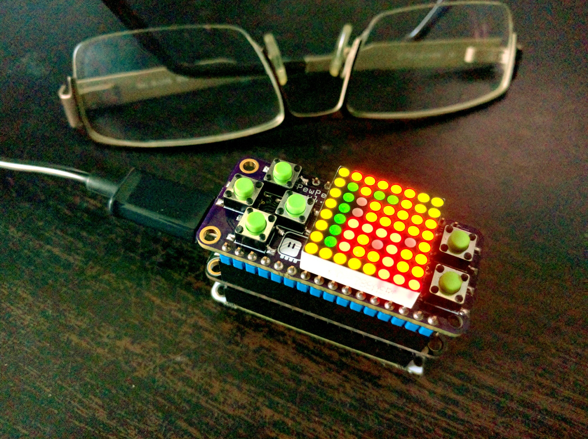

ESP8266 GPIOs Suck¶
Published on 2017-05-16 in PewPew FeatherWing.
That’s a fact.
But let me start at the beginning. When I realized that the IS31FL3733’s open/short LED detecting feature can’t be used for reading the state of the buttons for this shield, I immediately designed a second prototype with the buttons connected (as a button matrix) to the GPIO pins of whatever feather board is plugged into it. But since I needed 5 pins for that, I had to plan carefully.
For the row pins I choose gpio12, gpio13 and gpio15, because I wanted to have them pulled low – and that pretty much excludes gpio0 and gpio2, because if I pull those low, the board won’t boot. I also avoided gpio16, because that’s connected to a LED on the Feather HUZZAH. That left gpio14 and one more pin for the columns. The choice was hard, but I finally semi-randomly decided to use gpio16 after all – mostly because I didn’t want the board to fail to boot when the user is holding a key. Yeah, I know, a bad decision – I also forgot about ghosting effect and generally that prototype is not going to fly. But whatever.
Then I did some quick research around available keyboard handling chips, and designed another prototype that uses a TM1650 chip, which I ordered from China. (I will probably make yet another prototype that uses a simple atmega both for handling the keys and for making sounds, but more about that later.)
Fast forward two weeks and I found in my mailbox the PCB for the second prototype, courtesy of OSHPark. Two days later the first prototype PCB arrived. And the chips? They have just left China, because the seller apparently couldn’t remember when they put them. So here I am now, traveling to PyCon.us tomorrow, wanting to show something working, with the two prototypes. I decided to give that direct-gpio approach a try.
So I tried with different approaches. Pull-downs on the rows and columns switched from high-z to high – that doesn’t seem to work, the diode on the GPIO16 seems to be interfering. OK, then let’s remove the pull downs and try internal pull-ups on the rows and switching from high-z to low on the columns – nope, gpioi15 is pulled low internally, and that’s stronger than the internal pull-up. Then maybe reverse it, internal pull-ups on the columns and swithing between high-z and low on the rows? Nope, pull-down on the gpio15 again, and gpio16 doesn’t have an internal pull-up. Argh. I even tried some mixed modes, low for gpio12 and 13, and high for gpio15, but I couldn’t get it working.
In the end, I just ported my libraries to CircuitPython (which I wanted to do anyways eventually) and used the shield with the Feather M0 Basic board, which has none of that nonsense and simply just works, albeit a bit slow.
